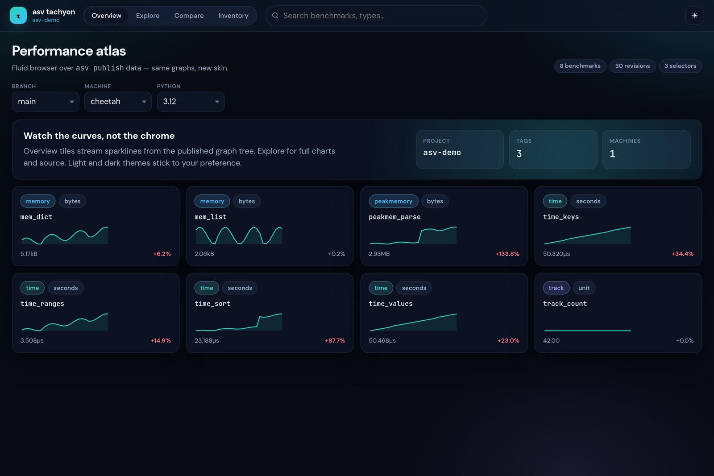

asv-tachyon#
Modern web UI for airspeed velocity results.
Drop-in shell over the same static tree asv publish already writes
(index.json, graphs/**, regressions.json). No server-side app,
no new result format.

Overview — sparkline tiles over published ASV graphs
Install#
pip install asv-tachyon
asv publish
asv-tachyon serve .asv/html --open
Or replace the legacy index.html in place:
asv-tachyon install .asv/html
asv-tachyon serve .asv/html
Demo without a project:
asv-tachyon serve fixtures/sample_site --open
Views#


Overview — fluid sparkline atlas, search, light/dark themes
Explore — full uPlot series, recent points, source snippet
Compare — pairwise ratios with the same factor semantics as
asv compare/ asv-spyglass (env or revision pairs)Regressions —
regressions.jsontable with interactive factor thresholdInventory — added / removed / version-bumped over published params or two dropped ASV result JSON files (same classify as
asv-spyglass env-diff)